旧阁楼内部 USD 场景
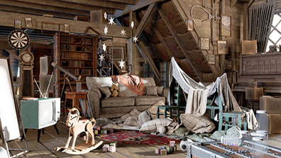
本教程演示了如何使用 Arnold 打开来自 NVIDIA 的 USD 场景，修改其内容，然后对其进行渲染。可以使用 Arnold 轻松地打开 USD 文件，并使用替代对象（程序）对其进行渲染。我们将在替代对象中使用运算符来调整 USD 照明（来自 NVIDIA Omniverse）。我们还将使用运算符修改镜子对象和沙发材质。最后，我们将禁用 Omniverse 照明，并将其替换为 Arnold 灯光。
在此处下载 Attic_NVIDIA.zip 文件（需要登录）。
- 将文件 Attic_NVIDIA.zip 解压缩为如下所示的文件夹结构，以便 .usd 文件正确加载
../atticwork/attic_v5/
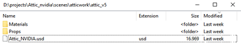
- 创建一个替代对象（程序）。选择“路径”(Path)旁边的文件夹，然后选择 Attic_NVIDIA.usd 文件。
- 您将注意到阁楼几何体的方向是 Z 上方向而不是 Y 上方向。这是因为源自 Omniverse 的原始场景文件的方向是 Z 上方向。在 X 轴上将替代对象旋转 -90 度。
| 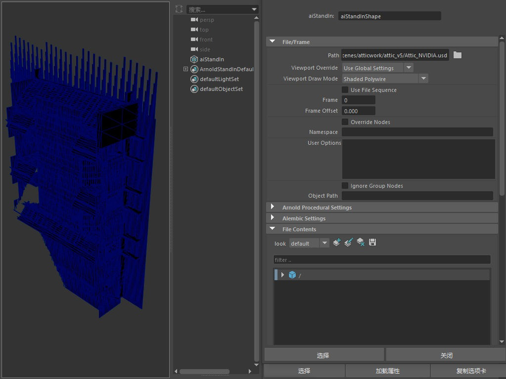 | 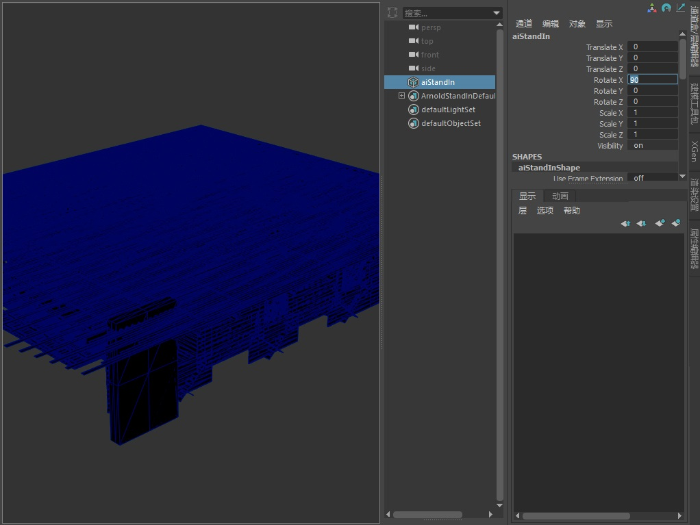 |
| 阁楼场景（替代对象）的方向为 Z 上方向 | 在 X 轴上将替代对象旋转 -90 度 |
- 创建一个摄影机（将其重命名为 RenderCam），并将其放置在适当位置，使效果类似下图。
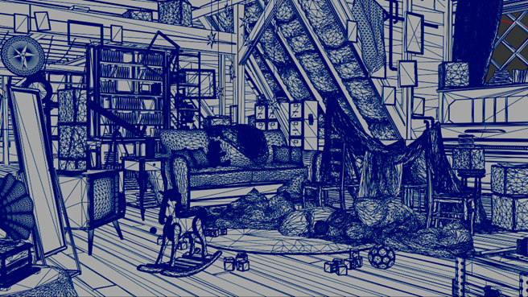
RenderCam 视图。替代对象的“视口绘制模式”(Viewport Draw Mode)设置为“多边形线”(Polywire)。
- 如果我们检查替代对象的“文件内容”(File Contents)，可以看到“根”(Root)下分组为“外观”(Looks)、“灯光”(Lights)和“几何体”(Geometry)。
- 打开“灯光”(Lights)组。您应该会注意到有一些来自 Omniverse 的灯光。这些灯光会在内部进行转化，如下所示：
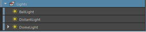
BallLight = point_light、DistantLight = directional_light 和 DomeLight = skydome_light。
诊断/功能覆盖(Diagnostics/Feature Overrides)
为了更快地测试场景照明的渲染，可使用“功能覆盖”(Feature Overrides)（Arnold“渲染设置”(Render Settings)的“诊断”(Diagnostics)选项卡）。
- 在“功能覆盖”(Feature Overrides)*下启用 *ignore_textures 和 ignore_shaders。
- 渲染场景。您应该会看到 IPR 渲染场景并调整照明的速度明显加快
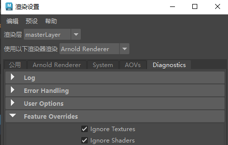
- 渲染场景。您应该会看到 Omniverse 照明太亮。我们可以使用运算符轻松地对其进行调整。
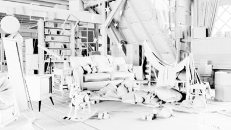
默认的 Omniverse 照明太亮（启用了 ignore_textures/shaders）。
运算符
我们可以使用运算符调整 USD 文件中 Omniverse 灯光的照明和方向。
使用“添加赋值”(Add Assignment)调整照明
- 我们可以通过向 USD 中的 Domelight 添加 intensity 赋值对其进行调整（set_parameter 运算符）。
- 在替代对象的“文件内容”(File Contents)中选择 Domelight。
- 转到“添加赋值 -> skydome_light -> intensity”(Add Assignment -> skydome_light -> intensity)。
- 将 intensity 减小到 0.1 左右。
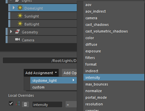
- 接下来，创建一个 aiSetTransform 运算符。我们将使用此运算符旋转 DomeLight。
- 选择 aiSetTransform（双击），然后将 X 轴旋转角度更改为 90 度。这将旋转 DomeLight。
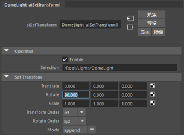
- 渲染场景。您应该会看到 DomeLight 的强度和方向已发生变化。
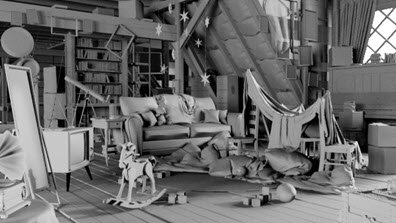
使用 set_parameter 和 aiSetParameter 运算符调整 USD Domelight 的强度和方向
使用“设置参数”(Set Parameter)将镜子设为双面
镜子作为单面对象进行渲染（来自 Omniverse）。我们通过向镜子添加 sidedness 赋值将其设为双面（set_parameter 运算符）。
- 在“文件内容”(File Contents)下选择镜子：
/Root/Geometry/mirror/mirror2 - 转到“添加赋值 -> common -> sidedness”(Add Assignment -> common -> sidedness)*。这会自动将 *set_parameter 添加到 mirror2。现在，渲染场景时，房间应该在镜子的反射中可见。
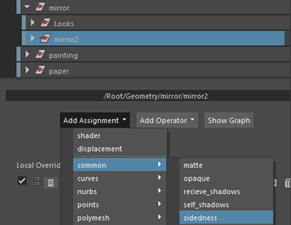
使用着色器指定更改沙发着色器(Change Couch Shader Using Shader Assignment)
.usd 文件包含一些 MDL 材质。我们将其中一个替换为 Arnold standard_surface 着色器。
- 选择“文件内容”(File Contents)下的“沙发”(couch) -
/Root/Geometry/couch/couch - 选择“添加赋值”(Add Assignment)，然后选择“着色器”(Shader)。
- 选择“着色器”(Shader)*右侧的
 图标，然后选择 *standard_surface 着色器。现在，您应该会看到沙发使用此新的 standard_surface 着色器进行渲染。
图标，然后选择 *standard_surface 着色器。现在，您应该会看到沙发使用此新的 standard_surface 着色器进行渲染。
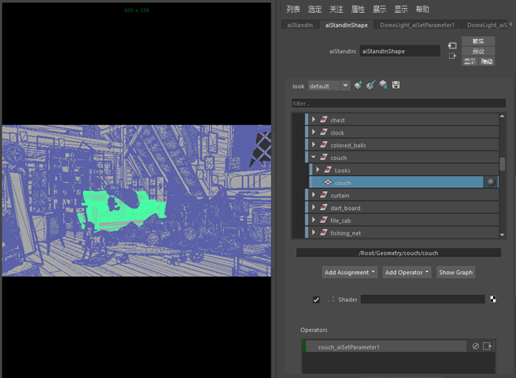
为沙发指定着色器赋值 (standard_surface)
禁用 USD 照明(Disable the USD Lighting)
我们将 .usd 文件中的 Omniverse 灯光替换为 Arnold 灯光。这样可以更轻松地对场景进行照明，从而不必继续使用运算符。
首先，我们必须使用 disable 运算符禁用 USD 中的 Omniverse 灯光。
- 在 USD 的“文件内容”(File Contents)中，选择“灯光”(Lights)组。
- 选择“添加运算符”(Add Operator)按钮，然后选择 aiDisable。您应该会看到它显示在下面的“运算符”(Operators)列表中。
- 渲染场景。由于灯光已被禁用，它应该会渲染为黑色。
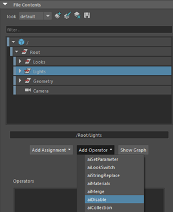
使用 aiDisable 运算符禁用灯光
添加 Arnold 灯光(Add Arnold Lights)
- 创建 skydome。
- 创建一个 physical_sky，并将其连接到天穹灯光的“颜色”(Color)属性。确保将_方向轴_更改为“Z 上方向”(Z-up)。
- 创建_灯光引导口_，并将其放置在阁楼窗户外面。它们有助于减少穿过小窗户的天穹灯光中的内部噪波。
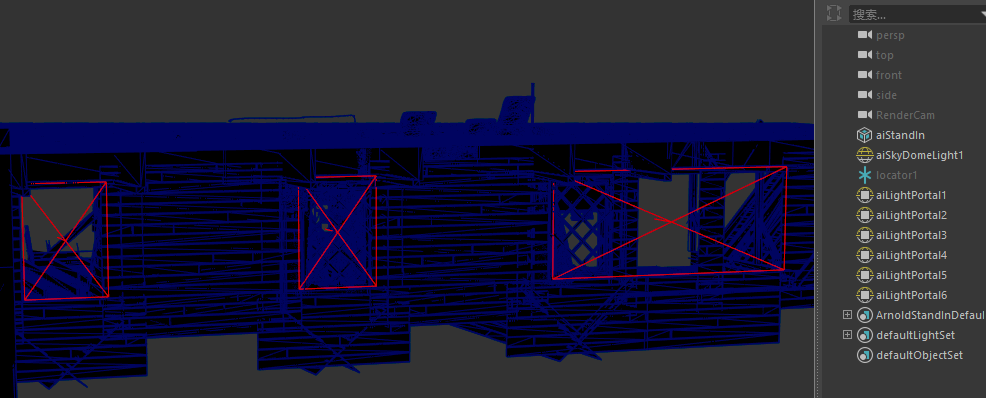
- 对照明满意后，在“渲染设置 -> 诊断 -> 功能覆盖”(Render Settings -> Diagnostics -> Feature Overrides)*下禁用 *ignore_textures 和 ignore_shaders。
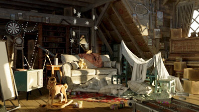
使用 Arnold 灯光渲染的阁楼场景
就是这样。为什么不尝试调整场景中其他对象的一些材质，或者尝试使用运算符进行其他的照明设置。
选择“显示图形”(Show Graph)按钮可显示在“节点编辑器”(Node Editor)窗口中连接到替代对象的运算符。
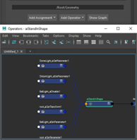